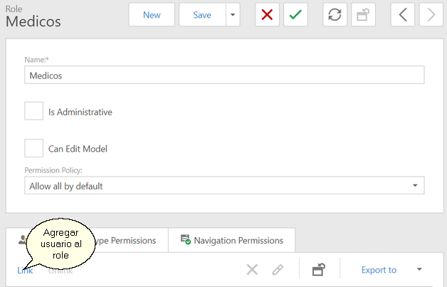
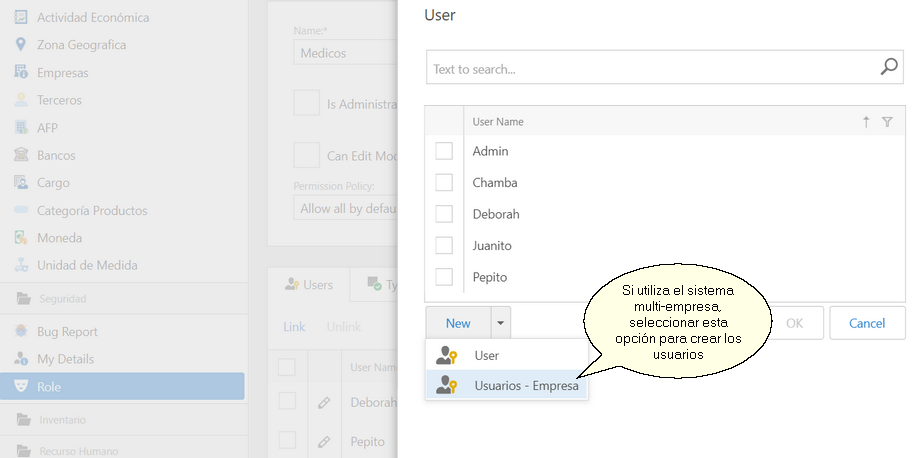
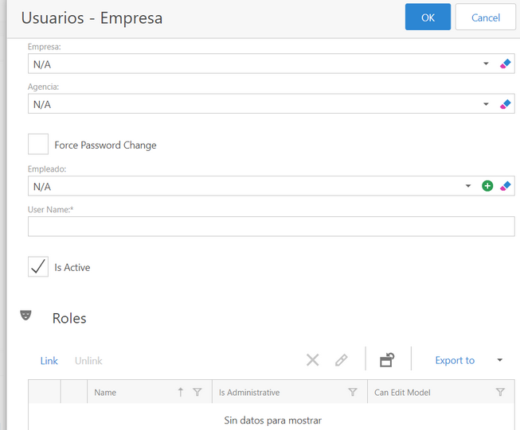

|
<< Click to Display Table of Contents >> Navigation: Seguridad > Usuario |
Esta opción esta disponible para los usuarios que pertenecen al Role con privilegios Administrativos, en nuestro caso el role es Administradores. Tiene como finalidad proporcionar un mecanismo para crear, modificar, eliminar y en general dar mantenimiento a las cuentas de Usuario.
Para ingresar a esta opción debe:
1.Ir al menú Seguridad
2.Seleccionar la opción Role
3.Seleccionar el Role al cual se va a agregar el usuario
4.Dar clic en la acción Editar Role
5.Ir a la pestaña Users
6.Clic en la accción Link

7.Seleccionar el usuario a vincular al role. Para agregar un nuevo usuario dar clic en el botón New

8.Al agregar un nuevo usuario se muestra el formulario para ingresar los datos

Hay dos alternativas para agregar usuarios:
•User
•Usuario - Empresa
Se sugiere usar Usuario - Empresa. Tiene tres propiedades adicionales que son clave:
•Empresa permite al escalar a un entorno multi-empresa, filtrar y mostrar únicamente la información que corrresponde a la empresa a la cual esta vinculado el usuario. Un usuario solamente podrá estar vinculado a una empresa a la vez. Al momento de autenticarse, si el usuario no corresponde con la empresa seleccionada, no puede ingresar al sistema.
•Agencia. Corresponde a un consultorio o sucursal de la empresa a la cual esta vinculado el usuario. Esta es la sucursal de la sesión del usuario y en el diálogo de autenticación puede seleccionar una distinta siempre que corresponda a la empresa.
•Empleado. Este es el ID de empleado al cual se vincula el usuario. Es clave para filtrar información por usuarios, por ejemplo: las citas, mostrar solo las que corresponden al medico que se autentico.
Con lo expuesto antes, se comprende mejor, los motivos para elegir Usuario - Empresa para crear los usuarios, porque esta funcionalidad no estará disponible con la opción User.
9.Para editar un usuario, seleccionarlo y luego dar clic en el botón Edit
10.Para borrar un usuario, seleccionarlo y dar clic en el botón Delete
Ver Además
•Role
•Editar Políticas de Navegación
•Editar Permisos para Tipos de Objeto de Negocio